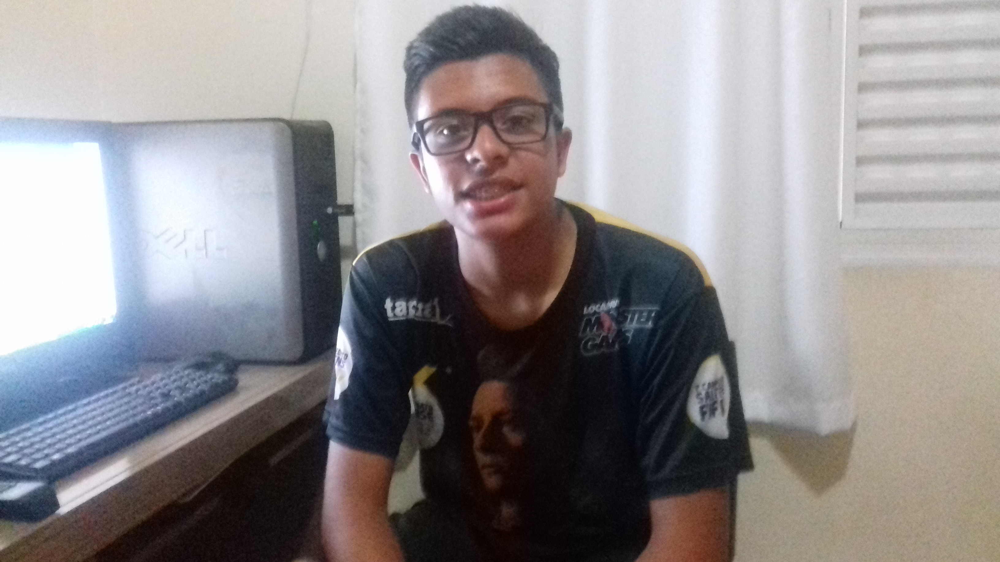

World Of programming e uma site de programação, sempre com o objetivo de ajudar o proximo, que no caso e você programador.
A World Of Programming sempre se preocupa com as pessoas que irão começar a estudar linguagem de programação, pois não e algo facíl, o inicio parece facíl, porém com o tempo, a linguagem começa a complicar.
A World Of Programming e um site que vai te apresentar a linguagem que você deseja aprender, nesse site e apresentada o conceito da linguagem, Historia,Criador da linguagem e etc.
Nós temos a ideologia de que para você começar a programar em uma linguagem, você primeiro tem que conhecer a linguagem que você está trabalhando, pois e errado trabalhar numa linguagem em que você não sabe a historia e o conceito dela.
Criador da World Of Programming

Lucas Anselmo Moraes Da Silva, começou o projeto do site, apenas para um trabalho escolar.
Lucas passou 2 meses programando e editando o site, sempre com o objetivo de fazer esse site ainda ser uns dos mais acessados do mundo.
Lucas sempre seguira o caminho da simplicidade na formatação de seu site, não utilizava codigos muitos complexos, pois Lucas queria mostrar, que apenas codigos simples, podem fazer sites famosos e muitos acessados.
Lucas sempre utilizara a simplicidade em seus sites, de vez enquando, que ele utiliza Javascript ou PHP, porém Lucas sempre tenta evitar isso, para manter o espirito de simplicidade.
A ideia de fazer sobre linguagem de programação, foi uma ideia que Lucas teve, quando começou a sentir dificuldades na aula de Java, e sempre que pesquisava ajuda nos sites, encontrava vários link's de informação, porém não achava a resposta, portanto, para evitar isso, começou a programar um site em que tivesse informações uteis sobre Java, com explicação de exercicio, codigos, video aula, e começou a juntar num site, a partir daí, que a World Of Programming nasceu.
Pequenos passos
Programador, sempre de valor aquilo em que você está programando, seja programando num PC, Notebook ou até no Celular, sempre valorize os pequenos passos, as dificuldades, pois e errando em que se aprende, pequenos passos, constroem uma grande caminhada de sucesso no mundo da programação.